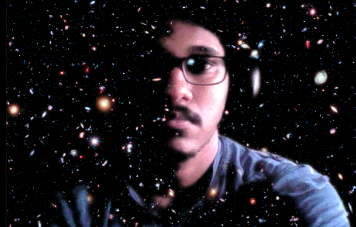

Hitesh Kishore Das
I'm a 4th year undergraduate with Physics major at Indian Institute of Science, Bangalore. I'm currently working in ICM and CGM Astrophysics.
The purpose of this website is to act as a collection or showcase for my various projects and interesting bits, both academic and non-academic.
Background of the image: Hubble Ultra Deep Field - Credit: NASA, ESA, and S. Beckwith (STScI) and the HUDF Team
As an excuse for this incomplete website:
"This website is at early stages of development"
